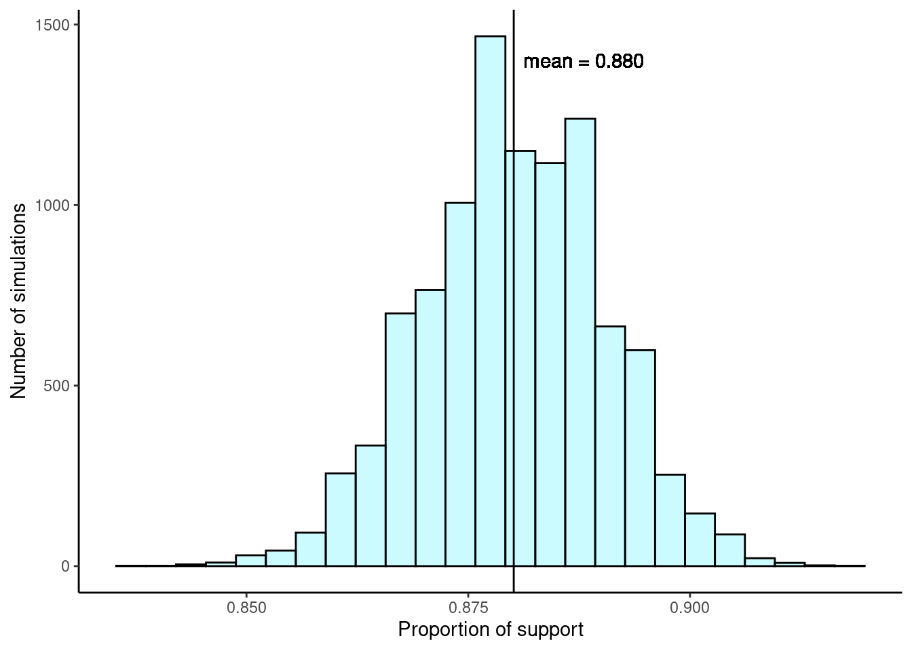
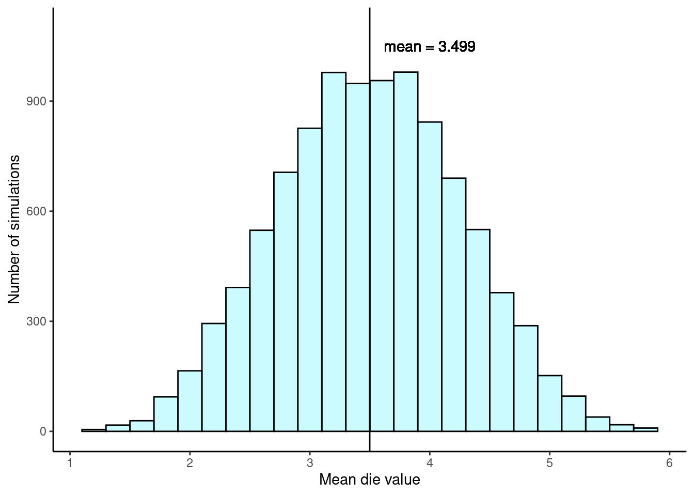
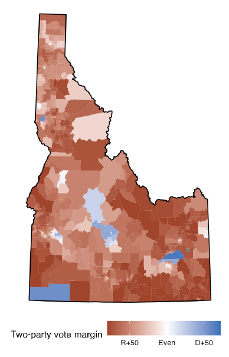
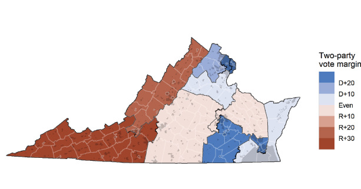
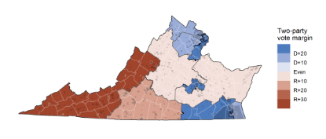
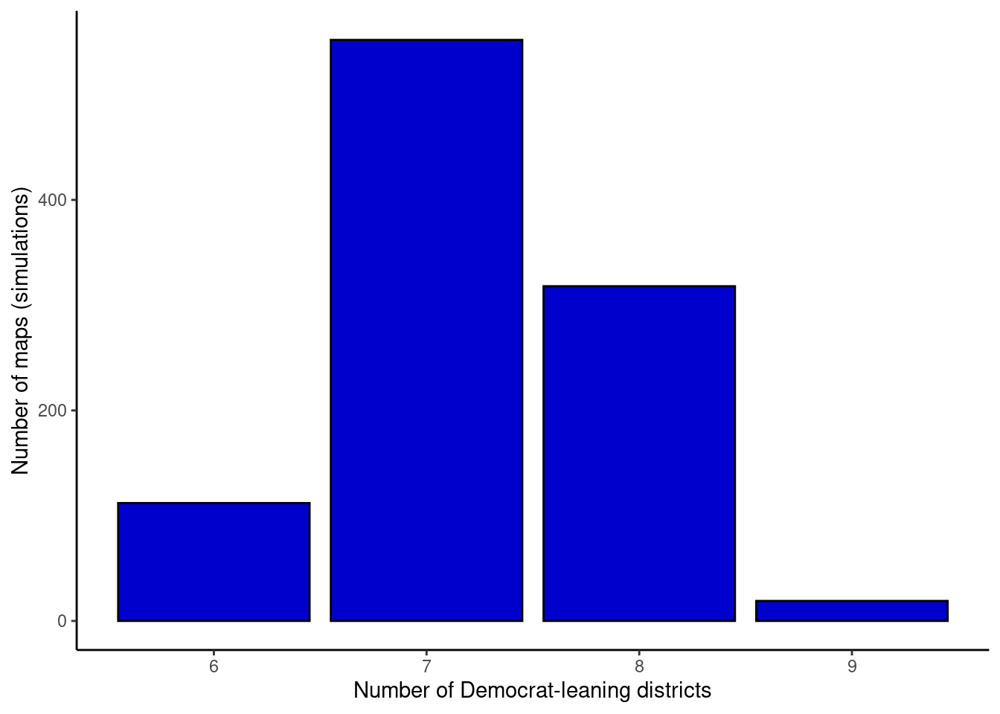

19 Sampling Distributions
19.1 Objectives
- Differentiate between various statistical terminologies such as point estimate, parameter, sampling error, bias, sampling distribution, and standard error, and construct examples to demonstrate their proper use in context.
- Construct a sampling distribution for various statistics, including the sample mean, using
R. - Using a sampling distribution, make decisions about the population. In other words, understand the effect of sampling variation on our estimates.
19.2 Decision making under uncertainty
At this point, it is useful to take a look at where we have been in this book and where we are going. We did this in the case study, but we want to discuss it again in a little more detail. We first looked at descriptive models to help us understand our data. This also required us to get familiar with software. We learned about graphical summaries, data collection methods, and summary metrics.
Next we learned about probability models. These models allowed us to use assumptions and a small number of parameters to make statements about data (a sample) and also to simulate data. We found that there is a close tie between probability models and statistical models. In our first efforts at statistical modeling, we started to use data to create estimates for parameters of a probability model.
Now we are moving more in depth into statistical models. This is going to tie all the ideas together. We are going to use data from a sample and ideas of randomization to make conclusions about a population. This will require probability models, descriptive models, and some new ideas and terminology. We will generate point estimates for a metric designed to answer the research question and then find ways to determine the variability of the metric. In Figure 19.1, we demonstrate this relationship between probability and statistical models.
19.3 Introduction
Companies such as Pew Research frequently conduct polls as a way to understand the state of public opinion or knowledge on many topics, including politics, scientific understanding, brand recognition, and more. The ultimate goal in taking a poll is generally to use the responses to estimate the opinion or knowledge of the broader population.
19.4 Point estimates and error
Suppose a poll suggested the US President’s approval rating is 45%. We would consider 45% to be a point estimate of the approval rating we might see if we collected responses from the entire population. This entire-population response proportion is generally referred to as the parameter of interest. When the parameter is a proportion, it is often denoted by \(p\), and we often refer to the sample proportion as \(\hat{p}\) (pronounced p-hat). Unless we collect responses from every individual in the population, \(p\) remains unknown, and we use \(\hat{p}\) as our estimate of \(p\). The difference we observe from the poll versus the parameter is called the error in the estimate. Generally, the error consists of two aspects: sampling error and bias.
Sampling error, sometimes called sampling uncertainty, describes how much an estimate will tend to vary from one sample to the next. For instance, the estimate from one sample might be 1% too low while in another it may be 3% too high. Much of statistics, including much of this book, is focused on understanding and quantifying sampling error, and we will find it useful to consider a sample’s size to help us quantify this error; the sample size is often represented by the letter \(n\).
Bias describes a systematic tendency to over- or under-estimate the true population value. For example, if we were taking a student poll asking about support for a new college stadium, we’d probably get a biased estimate of the stadium’s level of student support by wording the question as, Do you support your school by supporting funding for the new stadium? We try to minimize bias through thoughtful data collection procedures, which were discussed previously and are the topic of many other books.
19.5 Understanding the variability of a point estimate
Suppose the proportion of American adults who support the expansion of solar energy is \(p = 0.88\), which is our parameter of interest. If we were to take a poll of 1000 American adults on this topic, the estimate would not be perfect, but how close might we expect the sample proportion in the poll would be to 88%? We want to understand, how does the sample proportion \(\hat{p}\) behave when the true population proportion is 0.88.1 Let’s find out! We can simulate responses we would get from a simple random sample of 1000 American adults, which is only possible because we know the actual support for expanding solar energy is 0.88. Here’s how we might go about constructing such a simulation:
There were about 250 million American adults in 2018. On 250 million pieces of paper, write “support” on 88% of them and “not” on the other 12%.
Mix up the pieces of paper and pull out 1000 pieces to represent our sample of 1000 American adults.
Compute the fraction of the sample that say “support”.
Any volunteers to conduct this simulation? Probably not. Running this simulation with 250 million pieces of paper would be time-consuming and very costly, but we can simulate it using computer code.
For the purposes of this book, we’ll create a population with only 2.5 million individuals. In this simulation, the sample gave a point estimate of \(\hat{p}_1 = 0.893\). We know the population proportion for the simulation was \(p = 0.88\), so we know the estimate had an error of \(0.893 - 0.88 = +0.013\).
# 1. Create a set of 2.5 million entries,
# where 88% of them are "support" and 12% are "not".
pop_size <- 2500000
possible_entries <- c(rep("support", 0.88 * pop_size),
rep("not", 0.12 * pop_size))# 2. Sample 1000 entries without replacement.
set.seed(2024)
sampled_entries <- sample(possible_entries, size = 1000)
# 3. Compute p-hat: count the number that are "support", then divide
# by the sample size.
sum(sampled_entries == "support") / 1000[1] 0.893One simulation isn’t enough to get a great sense of the distribution of estimates we might expect in the simulation, so we should run more simulations. In a second simulation, we get \(\hat{p}_2 = 0.885\), which has an error of \(+0.005\). In another, \(\hat{p}_3 = 0.878\) for an error of \(-0.002\). And in another, an estimate of \(\hat{p}_4 = 0.859\) with an error of \(-0.021\). With the help of a computer, we’ve run the simulation 10,000 times and created a histogram of the results from all 10,000 simulations in Figure 19.2.
# 4. Repeat steps 2 and 3 10,000 times.
set.seed(2024)
solar_results <- do(10000)*sum(sample(possible_entries,
size = 1000) == "support") / 1000solar_results %>%
gf_histogram(~sum, color = "black", fill = "cadetblue1") %>%
gf_vline(xintercept = mean(solar_results$sum)) %>%
gf_text(label = "mean = 0.880", x = 0.888, y = 1400) %>%
gf_labs(x = "Proportion of support", y = "Number of simulations") %>%
gf_theme(theme_classic())

This distribution of a statistic, in this case the sample proportion, is called a sampling distribution. We can characterize this sampling distribution as follows:
Center. The center of the distribution is \(\bar{x}_p = 0.880\), which is the same as the parameter. Notice that the simulation mimicked a simple random sample of the population, which is a straightforward sampling strategy that helps avoid sampling bias.
Spread. The standard deviation of the distribution is \(s_{\hat{p}} = 0.010\). When we’re talking about a sampling distribution or the variability of a point estimate, we typically use the term standard error rather than standard deviation.
Shape. The distribution is symmetric and bell-shaped, and it resembles a normal distribution.
These findings are encouraging! When the population proportion is \(p = 0.88\) and the sample size is \(n = 1000\), the sample proportion \(\hat{p}\) tends to give a pretty good estimate of the population proportion. We also have the interesting observation that the histogram resembles a normal distribution.
Sampling distributions are never observed, but we keep them in mind
In real-world applications, we never actually observe the sampling distribution, yet it is useful to always think of a point estimate as coming from such a hypothetical distribution. Understanding the sampling distribution will help us characterize and make sense of the point estimates that we do observe.
Exercise: If we used a much smaller sample size of \(n = 50\), would you guess that the standard error for \(\hat{p}\) would be larger or smaller than when we used \(n = 1000\)?
Intuitively, it seems like more data is better than less data, and generally that is correct! The typical error when \(p = 0.88\) and \(n = 50\) would be larger than the error we would expect when \(n = 1000\).
The above exercise highlights an important property we will see again and again: a bigger sample tends to provide a more precise point estimate than a smaller sample.
19.6 Sampling distributions case study: rolling the dice
Let’s consider a standard six-sided die and define a random variable \(X\) as the result of a single die roll. The sample space is \(S = \{1, 2, 3, 4, 5, 6\}\) and each outcome has an equal probability of \(1/6\). The expected value of \(X\) is easily found to be \(E(X) = 3.5\).2
We will take a sample by rolling the die \(n = 5\) times. We will then compute the mean of each sample. We can easily set up this process in R. Our first sample is \(\{2, 5, 5, 4, 1\}\) with a mean value of \(\bar{x}_1 = 3.4\).
# 1. Create a population/sample space of the six values
# on a standard six-sided die
possible_values <- c(1, 2, 3, 4, 5, 6)# 2. Sample 5 entries with replacement.
set.seed(2024)
sampled_values <- sample(possible_values, size = 5, replace = T)
sampled_values[1] 2 5 5 4 1# 3. Compute the mean value.
mean(sampled_values)[1] 3.4Again, one simulation isn’t enough to understand the distribution of means we might expect, so we should run more simulations. In a few further simulations, we get \(\bar{x}_2 = 3\), \(\bar{x}_3 = 4.8\), \(\bar{x}_4 = 2.4\), and \(\bar{x}_5 = 2.6\). With the help of a computer, we’ve run the simulation 10,000 times and created a histogram of the results from all 10,000 simulations in Figure 19.3.
# 4. Repeat steps 2 and 3 10,000 times.
set.seed(2024)
dice_results <- do(10000)*mean(sample(possible_values,
size = 5, replace = T))dice_results %>%
gf_histogram(~mean, color = "black", fill = "cadetblue1", binwidth = 0.2) %>%
gf_vline(xintercept = mean(dice_results$mean)) %>%
gf_lims(y = c(0, 1100)) %>%
gf_text(label = "mean = 3.499", x = 4, y = 1050) %>%
gf_labs(x = "Mean die value", y = "Number of simulations") %>%
gf_theme(theme_classic())

This distribution of sample means is another example of a sampling distribution. We can characterize this sampling distribution as follows:
Center. The center of the distribution is \(\bar{x} = 3.499\), which is almost exactly the same as the parameter value of \(\mu = 3.5\).
Spread. The standard deviation of the distribution is \(s_{\bar{x}} = 0.764\). Because this is the standard deviation of the point estimate \(\bar{x}\), we call it the standard error of \(\bar{x}\).
Shape. The distribution is symmetric and bell-shaped, and it again resembles a normal distribution.
In contrast to our first example of support for solar energy, we have a population mean of \(\mu = 3.5\) and a much smaller sample size of \(n = 5\). Even so, the sample mean is a good estimate of the population mean and the histogram of sample mean values again looks similar to that of a normal distribution.
19.7 Sampling distributions case study: gerrymandering
Gerrymandering is the practice of drawing the boundaries of electoral districts in a way that gives one political party an unfair advantage over others. This manipulation can influence the outcomes of elections, allowing the controlling party to maintain or increase its power, even if it doesn’t have majority support among the voters.
To get a real sense of how gerrymandering works, try it out yourself! Use this simulation to practice gerrymandering, but stop after the 6th challenge.
At this point, you might be wondering: Why can’t we just make everything proportional? For example, if 60% of people in a state support Republicans, let’s just make 6 out of their 10 representatives Republican!” Unfortunately, it’s not so simple.
Let’s consider the state of Idaho. Idaho has two congressional districts, so the state gets two House representatives. In a typical election, Democrats earn 34% and Republicans earn 66% of major party votes. Both Idaho representatives are almost always Republicans (Alarm Redistricting 2024).
Figure 19.4 displays the vote patterns broken down by census tracts of roughly equal population size.

Exercise: To give the most proportional representation, how many of the two representatives should be Republican? How many Democrat?
Because 34% and 66% are closer to 50% than they are to 0% or 100%, the most proportional representation would come from one Republican and one Democrat representative.
In order to give one seat to a Democrat though, we would have to make a district that looks like a snake, winding its way from the southwest corner north towards Boise and then east towards the other blue patches. Even if we wanted to make this district, it may not be possible (since all districts have to have roughly equal population sizes). Many states, including Idaho have constraints on how districts can be drawn. In Idaho, districts must be contiguous, have equal populations, be geographically compact, preserve county and municipality boundaries as much as possible, not be drawn to favor party or incumbents, and connect counties based on highways. Plus, representing a “snake” district isn’t ideal; because of the strange layout, people in different parts of the district may face different issues and have highly different desires. This would lead to less than ideal representation in government.
19.7.1 The statistician’s answer: simulation
Between balancing the need for party representation (proportionality) and the need for geographic representation (no weird shapes), the Supreme Court has struggled to set a consistent standard for evaluating maps. So, in 2019, a group of mathematicians got together and wrote a Supreme Court brief that proposed a new simulation method for map evaluation:
Have a computer draw a bunch of randomly simulated maps under two rules: a) districts have equal population sizes, and b) no weird shapes.
Using prior election data, estimate how well Democrats and Republicans would do in each of the randomly drawn maps.
See if the map drawn by the actual state legislature is unusual (in terms of projected election outcomes) compared to the randomly simulated maps.
By having a computer (with no internal party preference and with rules for shapes) draw random maps, we balance the needs for both proportionality and geography!
Skew the Script (Skew the Script 2024) developed a simulation applet to help determine if a state gerrymandered its Congressional districts, through the power of simulation. Powered by the ALARM redist package3, the simulation divides states into randomly drawn districts of equal population size. The simulations also follow some rules about “no weird shapes” and the details for that requirements are available through the ALARM Redistricting project (Alarm Redistricting, n.d.). Then, it uses prior election data to find the political lean of the simulated districts. For the state of Idaho, the analysis is based on data from the 2016 and 2020 Presidential elections, 2016 and 2020 US Senate elections, and the 2018 Governor, Attorney General, and Secretary of State elections.
Let’s perform an analysis for Virginia. During redistricting, Virginia’s state legislature was controlled by Republicans. Did the legislature draw an unfair map?

We get started by selecting the state of Virginia in the applet. The actual Virginia map of Congressional districts is displayed for us in the applet and in Figure 19.5. Out of 11 total districts, seven are Democrat-leaning. Let’s add one sample. Based on the redistricting rules (e.g., districts have equal populations and no weird shapes), the app provides a single simulated map shown in Figure 19.6.

The applet also plots the number of Democrat-leaning districts, in this case seven, for us on a bar chart. We can continue to add one, three, ten, 30, or 100 sample redistricting maps to these results by clicking the appropriate button in the applet. When generating three or more samples at a time, the applet displays the last three simulated redistricting maps for comparison.
After adding 1,000 samples (for a total of 1,001 samples), we have results that look similar to those shown in Figure 19.7. What we’ve done here is create a sampling distribution for the number of Democrat-leaning districts in the state of Virginia by sampling 1,001 redistricting maps.4 In the applet, we’re able to compare the actual number of Democrat-leaning districts to our sampling distribution. Virginia appears to have a fair map. The legislature’s map projects seven Democrat-leaning districts, and the vast majority of simulations ($664/1001 = 66.3%) also had seven Democrat-leaning districts or fewer. So, the actual Virginia map is not unusual. There is little evidence that Republicans gerrymandered the state.

Exercise: Using the applet, perform an analysis and comment on the fairness of Illinois (Democrat-controlled legislature) and Texas (Republican-controlled legislature). Then, try your own state or another state of interest (note: states with one house member don’t go through redistricting).5
In its most recent landmark decision on gerrymandering (Rucho v. Common Cause), the Supreme Court abdicated to the legislature, saying that the courts could not make decisions on “political questions outside the remit of these courts.” In other words, if change is to happen, state legislatures or Congress have to pass laws to limit gerrymandering.
Exercise: Write such a law, using the simulation method described in this lesson. Specifically, fill in the blank: “If your map has more Democrat/Republican leaning districts than __% of simulations, it is unfair and should be rejected.” What number would you choose? Why?6
In the next few chapters, we’ll learn how to formalize these ideas and implement the four steps of hypothesis testing that we first glimpsed in the Inference Case Study in Chapter 18.
Alarm Redistricting. 2024. “Idaho Congressional Districts 2020.” https://alarm-redist.org/fifty-states/ID_cd_2020/.
———. n.d. “ALARM Project - Redistricting.” https://alarm-redist.org/.
Skew the Script. 2024. “Sampling Distributions.” https://skewthescript.org/ap-stats-curriculum/part-6.
We haven’t actually conducted a census to measure this value perfectly. However, a very large sample has suggested the actual level of support is about 88%.↩︎
\(E(X) = 1*{1\over 6} + 2*{1\over 6} + 3*{1\over 6} + 4*{1\over 6} + 5*{1\over 6} + 6*{1\over 6} = 3.5\)↩︎
The ALARM redist package in R enables researchers to sample redistricting plans from a pre-specified target distribution. Essentially, the authors of the package simulated a large number of possible redistricting maps. The package supports various constraints in the redistricting process, such as geographic compactness and population parity requirements, just like those requirements for any redistricting done in the state of Idaho.↩︎
In fact, we’ve actually created a null distribution by sampling 1,001 possible fair redistricting maps. This null distribution is developed by sampling under the assumption of fairness, the null hypothesis in this scenario.↩︎
Illinois is heavily gerrymandered: zero of the simulations have as many Democrat-leaning districts as the actual map. In Illinois’ enacted map, there are weirdly shaped districts that “carve out” Democrat-leaning areas. Texas is gerrymandered the opposite way: zero of the simulations have as few Democrat-leaning districts as the actual map. One district connects the east side of San Antonio with the east side of Austin, condensing Democrats in a long, skinny district across two metropolitan areas.↩︎
This question is building towards a hypothesis test. If the proportion of districts more extreme than the drawn map (the “p-value”) is lower than 5% (the “alpha level”), we reject the map (reject the null hypothesis that the map was fair). Of course, the analogy to hypothesis tests isn’t perfect, but it’s all about building intuition.
We typically use 5% as the alpha level in hypothesis tests, but it’s okay for your answer to vary a little - as long as you have a relatively low number and use the logic of finding a percent that would be “surprising” or “unusual”.↩︎